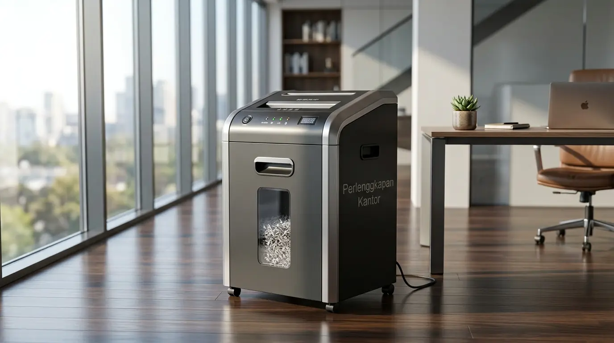

Perawatan rutin pada mesin penghancur kertas (paper shredder) merupakan kunci utama untuk memastikan kerahasiaan dokumen perusahaan tetap terjaga tanpa hambatan teknis. Kerusakan pada mekanisme pemotong umumnya terjadi akibat akumulasi serat kertas, penggunaan beban berlebih, dan tiadanya pelumasan berkala. Dengan menerapkan prosedur perawatan yang benar, efisiensi operasional kantor dapat dipertahankan sekaligus menekan biaya perbaikan perangkat keras dalam jangka panjang.
Mengapa Efisiensi Mesin Penghancur Kertas Sangat Bergantung pada Perawatan Rutin?
Cara merawat penghancur kertas secara konsisten menentukan masa pakai komponen mekanis internal, terutama blok pisau pemotong (cutting head). Berdasarkan data Association of Office Technology Professionals (AOTP) Report 2025, sekitar 68% kerusakan permanen pada paper shredder di lingkungan korporat disebabkan oleh akumulasi debu kertas dan ketiadaan pelumasan berkala selama lebih dari 6 bulan. Ketika serat kertas kering menumpuk, gesekan antar-pisau meningkat tajam, memicu kenaikan suhu motor listrik dan tumpulnya mata pisau pemotong.
Selain mencegah kerusakan fatal, perawatan terencana menurunkan risiko selip pada gir transmisi mekanis. Dalam operasional bisnis modern, kemacetan mesin (paper jam) yang berulang tidak hanya merusak komponen, tetapi juga membuang waktu produktif karyawan secara signifikan. Dukungan perangkat kerja yang andal dari Perlengkapan Kantor memastikan setiap unit pemotong bekerja secara optimal dengan tingkat kebisingan rendah dan daya potong yang presisi.
Bagaimana Cara Melumasi Pisau Shredder dengan Benar?
Cara merawat penghancur kertas melalui pelumasan wajib menggunakan oli khusus bertipe non-aerosol atau shredder oil berbasis nabati. Penggunaan pelumas semprot umum atau minyak pelumas mesin biasa sangat dilarang karena dapat mengikis lapisan pelindung pisau serta berisiko menimbulkan kebakaran akibat panas percikan motor listrik.
Prosedur pelumasan yang efektif dapat dilakukan melalui dua metode utama:
- Metode Langsung: Tuangkan oli khusus secara menyilang membentuk huruf "S" di atas selembar kertas HVS. Masukkan kertas tersebut ke dalam mesin dan jalankan fungsi pemotong (auto mode). Cairan oli akan diserap dan diratakan langsung oleh bilah pisau.
- Metode Reversal: Setelah kertas berpelumas terpotong seluruhnya, jalankan fungsi mundur (reverse mode) selama 10–15 detik untuk memastikan cairan pelumas terdistribusi merata ke seluruh celah pisau cross-cut atau micro-cut.
Lakukan prosedur ini setiap kali wadah penampung sampah (bin) dikosongkan, atau minimal dua kali dalam sebulan untuk intensitas pemakaian sedang.
Bagaimana Langkah Membersihkan Pisau Shredder dari Sisa Kertas?
Membersihkan pisau shredder dari sisa penumpukan serat memerlukan ketelitian dan penerapan standar keselamatan kerja yang ketat. Menurut International Facility Management Association (IFMA) Workplace Survey 2024, penumpukan debu kertas pada motor penghancur dokumen meningkatkan konsumsi daya listrik hingga 22% akibat beban kerja mesin yang memberat.

Membersihkan pisau shredder dari sisa debu kertas untuk menjaga ketajaman mesin dan mencegah kemacetan blok pemotong.
Untuk membersihkan sisa potongan kertas yang tersangkut di celah pemotong, ikuti langkah sistematis berikut:
- Putuskan Arus Listrik: Cabut kabel daya dari stopkontak sebelum menyentuh area pisau.
- Gunakan Pinset atau Tang Hidung Panjang: Tarik sisa kertas yang tersangkut secara perlahan dari bagian bawah atau atas pisau. Jangan menggunakan jari telanjang demi keselamatan.
- Pembersihan Debu Kertas: Gunakan kuas kering berserat halus atau vacuum cleaner mini untuk menyedot akumulasi partikel kertas di sekitar head unit.
- Hindari Cairan Pembersih Berbahan Kimia Keras: Jangan menyemprotkan alkohol atau cairan pembersih kaca langsung ke area pisau pemotong karena dapat merusak seal gir.
Bagi perusahaan yang membutuhkan keandalan operasional tingkat tinggi, Perlengkapan Kantor menyediakan rangkaian paper shredder kelas berat (heavy-duty) yang dilengkapi fitur auto-cleaning serta sistem sensor anti-macet canggih.
Unduh Katalog Tekno Kantor sekarang untuk menemukan pilihan mesin penghancur kertas bergaransi resmi yang sesuai dengan skala bisnis Anda.
Spesifikasi Perawatan Berdasarkan Jenis Potongan Mesin
Setiap jenis mesin penghancur kertas memiliki karakteristik mekanis yang berbeda. Berikut adalah komparasi kebutuhan perawatan berdasarkan tipe pemotong:
| Parameter Perawatan | Tipe Strip-Cut | Tipe Cross-Cut | Tipe Micro-Cut |
|---|---|---|---|
| Tingkat Keamanan | DIN P-1 hingga P-3 | DIN P-3 hingga P-5 | DIN P-5 hingga P-7 |
| Frekuensi Pelumasan | 1x Per Bulan | 2x Per Bulan | Setiap Pengosongan Bin |
| Risiko Penumpukan Debu | Rendah | Sedang | Sangat Tinggi |
| Jenis Pelumas Terbaik | Shredder Oil / Sheet | Shredder Oil / Sheet | High-Viscosity Shredder Oil |
| Sensitivitas Klip/Staples | Tahan Staples Standar | Terbatas pada Staples Kecil | Wajib Bebas Klip & Staples |
Apa Saja Kebiasaan Operasional yang Dapat Merusak Mesin Penghancur Kertas?
Menjaga durabilitas mesin penghancur kertas tidak hanya bergantung pada tindakan pemeliharaan, tetapi juga pada kebiasaan penggunaan sehari-hari. Sebagian besar kerusakan dini disebabkan oleh kesalahan destruktif yang dapat dihindari:
- Melebihi Kapasitas Lembar (Overloading): Memaksa memasukkan lembaran kertas melebihi batas maksimal spesifikasi mesin akan membuat gir plastik di dalam motor aus atau patah.
- Memotong Material yang Tidak Sesuai: Menghancurkan plastik tebal, karton tebal, klip kertas berukuran besar, atau pita perekat (duct tape) dapat memicu pisau tumpul dan tersumbat perekat lengket.
- Abaikan Siklus Kerja (Duty Cycle): Setiap mesin memiliki batas waktu operasional (misalnya 10 menit menyala, 30 menit istirahat). Mengabaikan siklus ini menyebabkan overheating pada motor utama.
- Temukan pilihan mesin penghancur kertas bergaransi pada artikel jual paper shredder GBC murah.
- Cek ulasan perlindungan dokumen pada rekomendasi mesin laminating A3 terbaik.
- Amankan arsip dan berkas fisik penting pada ulasan brankas dokumen tahan api.
Mengapa Memilih Solusi Office Technology dari Perlengkapan Kantor?
Sebagai penyedia perlengkapan kantor terpercaya, Perlengkapan Kantor menyajikan kurasi teknologi kantor berstandar tinggi yang dirancang untuk penggunaan korporat berintensitas tinggi. Setiap unit paper shredder yang kami distribusikan dilengkapi dengan garansi resmi, ketersediaan suku cadang asli, serta dukungan purna jual dari teknisi berpengalaman.
Kami memahami bahwa keamanan dokumen dan efisiensi kerja adalah prioritas bisnis Anda. Oleh karena itu, kami memberikan panduan integrasi unit, perawatan berkala, serta pasokan konsumabel seperti shredder oil kualitas terbaik untuk menjamin investasi alat kantor Anda bertahan lama.
Siapkan fasilitas kantor Anda dengan teknologi pemotong dokumen terbaik. Unduh Katalog Tekno Kantor untuk melihat spesifikasi lengkap dan penawaran khusus B2B.
Pertanyaan Populer Seputar Perawatan Mesin Penghancur Kertas (FAQ)
Kesimpulan Praktis
Menerapkan prosedur perawatan mesin penghancur kertas yang benar—mulai dari pelumasan rutin, pembersihan debu, hingga pematuhan batas kapasitas kerja—merupakan langkah krusial untuk menjaga ketajaman pisau dan memperpanjang usia pakai alat. Pengelolaan alat kantor yang terencana secara langsung berkontribusi pada efisiensi operasional perusahaan dan perlindungan data sensitif secara maksimal.
Untuk memastikan operasional kantor Anda didukung oleh perangkat teknologi yang andal dan berkualitas tinggi, percayakan seluruh kebutuhan perlengkapan bisnis Anda kepada Perlengkapan Kantor.

Penulis: Tim Spesialis Perlengkapan Kantor
Divisi Office Technology & Facility Essentials di Perlengkapan Kantor. Berpengalaman dalam menyajikan panduan teknis, rekomendasi pengadaan, dan kiat pemeliharaan alat operasional kantor modern untuk mendukung efisiensi bisnis korporat.